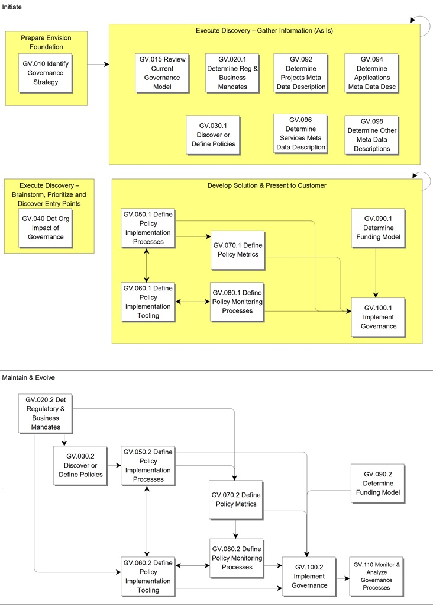

OUM |
Process Overview |
||
Method Navigation |
Current Page Navigation |
||
|
|
||||||||
In the most general sense, governance relates to decisions that define expectations, grant power, or verify performance. Thus, an organization will establish a system of governance, that is, structures, policies and processes that facilitate the correct running of the organization’s affairs.
Examples of governance in action is the imposition and monitoring of speed limits on public roads, namely:
In the Governance process, you review the organization’s strategies and objectives and affirm that the IT related objectives and strategies fit within those of the organization. A well-defined Governance process should validate that the IT investments are aligned with the business strategies throughout the enterprise, and mitigate associated risks.
In the context in which OUM is likely to be used, there is a number of relevant areas of governance, which are related, but not necessarily in your scope, each of which has a specific main concern:
There are different views as to the relationships between these various governance disciplines. Some sources cite IT Governance as a part of Corporate Governance, and the other disciplines being part of IT Governance. These disciplines sometime overlap and are sometimes separated depending on the point of view. For example ITIL (The IT Infrastructure Library), which is traditionally the most common standard used for IT Governance, does not specifically cover SOA Governance.
Corporate Governance relates to the running of the business, the behavior of the company officers, accounting principles, etc. Sarbanes-Oxley is an example of legislation that specifies some principles for Corporate governance, meaning what controls, reporting standards, etc., a corporation must have in order to operate within US law. It is unlikely that you and OUM will be used to set up or maintain a Corporate Governance mechanism, although IT can clearly be used to support Corporate Governance processes, e.g., through reporting. For this reason, Corporate Governance is likely to impose requirements on (enterprise) architecture and specific solutions in the IT area that normally are dealt with in the Enterprise Business Analysis (Envision), or Requirements Definition (Implement) processes. Corporate Governance policies necessarily have an impact on other governance areas, in that they provide a context for the entire organization, but do not address the detailed concerns of the other areas.
IT Governance relates to matching the organization’s IT-related strategies and objectives to those of the organization. A well-defined IT Governance process ensures that the IT investments are aligned with the business strategies throughout the enterprise, and mitigate associated risks. For example, instead of making ad hoc investments to cover for short-term goals of separate units, the investments should be in-line with the overall business strategy and fulfill strategic business objectives. IT Governance should ensure that a consistent message is sent to the organizational units and individual employees about IT spending. IT Governance is defined and managed within the constraints of Corporate Governance, but does not always overlap with it in practice. IT Governance impacts the whole organization, from Board level and senior executive to group or team leads, and it includes all IT assets, including hardware, software, and people. The goal of the process is to achieve alignment with the enterprise strategy, its needs, challenges and initiatives, to deliver promised benefits, and to leverage IT to increase enterprise value.
Architecture Governance, also referred to as Enterprise Architecture Governance (for example, in TOGAF), addresses the maintenance of architecture-related standards and conformance to those standards, as distinct from those of the wider IT scope. There may be some element of potential overlap between Architecture and IT Governance, and if your scope is limited to one or the other, it is important to ensure that the boundaries and relationships are sufficiently clearly defined.
SOA Governance is a process that relates to exercising control over services in a service-oriented architecture (SOA). A SOA specifically requires a number of IT support and organizational policies and processes to ensure that the benefits of SOA are realized, mostly because of additional reuse and cross-dependencies that SOA introduces. For example, SOA benefits from a specific funding model to support the provision of a service by an organizational unit against its reuse by other units, and the service level agreement (SLA) (availability, performance etc.) for that service. As SOA is relatively new, these aspects usually are being considered in traditional IT Governance initiatives.
Project Governance relates to the management of an individual project, and incorporates appropriate elements of Corporate, IT, Architecture and potentially SOA Governances, with the addition of project specifics. This is the concern of an individual project, and is therefore dealt with in OUM within the Manage and/or Implement focus areas, rather than the Envision focus area.
Data Governance is concerned with managing data and ensuring data quality and consistency across the organization. The need for data governance arises from regulatory requirements for accurate auditing as well as the enterprise view of data stemming from MDM and BI initiatives.
Relationship to Other Processes and Focus Areas
The policies defined in this process should be used within the other OUM processes in Envision as follows:
The policies should be used within most Manage processes, with the approaches defined for Scope Management, Financial Management, Risk Management, Issue and Problem Management, Quality Management, Configuration Management and Infrastructure Management process especially being aligned with the Governance policies. Furthermore, they should be used in all Manage and Implement processes when defining roles and responsibilities, to ensure that the proper roles with the proper authorities are involved in any decision making as addressed in the IT Governance policies. It is especially important that the proper customer roles are involved in that. For example, using the Governance policies one should be able to determine the scope, roles and responsibilities involved in the Configuration Management process.
 This process overview is written from the perspective of a Full Method View, utilizing ALL of the activities and tasks in this process. Therefore, all of the following sections provide comprehensive information. If your project is utilizing a tailored approach (for example, Technology Full Lifecycle View, Application Implementation View, Middleware Architecture View), not everything in this overview may be appropriate for your project. Please keep this in mind, especially when reviewing the Key Work Products and Tasks and Work Products sections. You should use OUM as a guideline for performing all types of information technology projects, but keep in mind that every project is different and that you need to adjust project activities according to each situation. Do not hesitate to add, remove, or rearrange tasks, but be sure to reflect these changes in your estimates and risk management planning. You should also consider the depth to which you address and complete each task based on the characteristics of your particular project or project increment. See Oracle's Full Lifecycle Method for Deploying Oracle-Based Business Solutions for further information on the scalability and adaptability of OUM.
This process overview is written from the perspective of a Full Method View, utilizing ALL of the activities and tasks in this process. Therefore, all of the following sections provide comprehensive information. If your project is utilizing a tailored approach (for example, Technology Full Lifecycle View, Application Implementation View, Middleware Architecture View), not everything in this overview may be appropriate for your project. Please keep this in mind, especially when reviewing the Key Work Products and Tasks and Work Products sections. You should use OUM as a guideline for performing all types of information technology projects, but keep in mind that every project is different and that you need to adjust project activities according to each situation. Do not hesitate to add, remove, or rearrange tasks, but be sure to reflect these changes in your estimates and risk management planning. You should also consider the depth to which you address and complete each task based on the characteristics of your particular project or project increment. See Oracle's Full Lifecycle Method for Deploying Oracle-Based Business Solutions for further information on the scalability and adaptability of OUM.
This process flow for this process follows:

This section is not yet available.
The tasks and work products for this process are as follows:
| ID | Task | Work Product |
|---|---|---|
Initiate Phase |
||
GV.010 |
Define Governance Strategy | Governance Strategy |
GV.015 |
Review Current Governance Model | Current Governance Model |
GV.020.1 |
Determine Regulatory and Business Mandates | Mandate Matrix |
GV.030.1 |
Discover or Define Policies | Governance Policies Catalog |
GV.040 |
Determine Organizational Impact of Governance | Impact Study and List of Proposed Organizational Changes |
GV.050.1 |
Define Policy Implementation Processes | Policy Implementation Processes |
GV.060.1 |
Define Policy Implementation Tooling | Governance Policy Tooling |
GV.070.1 |
Define Policy Metrics | Measurements Portfolio |
GV.080.1 |
Define Policy Monitoring Processes | Policy Monitoring Processes |
GV.090.1 |
Determine Funding Model | Funding Model |
GV.092 |
Determine Projects Meta Data Description | Projects Meta Data Description |
GV.094 |
Determine Applications Meta Data Description | Applications Meta Data Description |
GV.096 |
Determine Services Meta Data Description | Services Meta Data Description |
GV.098 |
Determine Other Meta Data Descriptions | Other Meta Data Descriptions |
GV.100.1 |
Implement Governance | Governance Implementation |
Maintain and Evolve Phase |
||
GV.020.2 |
Determine Regulatory and Business Mandates | Mandate Matrix |
GV.030.2 |
Discover or Define Policies | Governance Policies Catalog |
GV.050.2 |
Define Policy Implementation Processes | Policy Implementation Processes |
GV.060.2 |
Define Policy Implementation Tooling | Governance Policy Tooling |
GV.070.2 |
Define Policy Metrics | Measurements Portfolio |
GV.080.2 |
Define Policy Monitoring Processes | Policy Monitoring Processes |
GV.090.2 |
Determine Funding Model | Funding Model |
GV.100.2 |
Implement Governance | Governance Implementation |
GV.110 |
Monitor and Analyze Governance Processes | Governance Implementation Improvement Proposal |
This section is not yet available.
This section is not yet available.
This section is not yet available.
This section is not yet available.

Copyright © 2006, 2016, Oracle and/or its affiliates. All rights reserved.